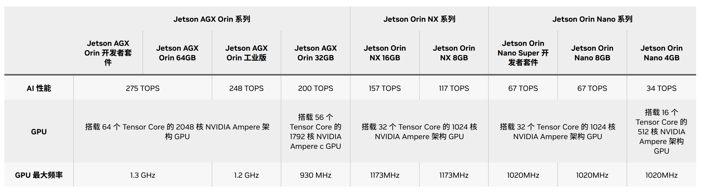

简介
NVIDIA Jetson平台提供用于开发和部署AI赋能机器人、无人机、IVA（Intelligent Video Analytics，智能视频）应用和自主机器的工具。在边缘生成式AI、NVIDIA Metropolis和Isaac平台支持下，Jetson提供可拓展得软件、现代AI堆栈、灵活的微服务和API、生成就绪型ROS软件包以及特定于应用程序的AI工作流。
Jetson 硬件Roadmap，分为商业方向和工业方向。
{kind=link}
上图是商业硬件roadmap，主要分为orin（欧林）和thor（雷神）两个系列。
{kind=link}
而工业方向roadmap主要是entry、mainstream、perfromance三个方向。
在软件方面，jetson提供JetPack软件包，截止目前最新的发布版本是JetPack 7.0，主要是基于ubuntu 24.04,集成了CUDA 13.0以及holoscan sensor bride支持。
{kind=link}
硬件
NVIDIA Jetson 模组可提供适合各种性能水平和价位的加速计算功能，从而能够满足各种自主应用的需求。从制造业到建筑业，从医疗健康到物流行业，Jetson 平台都能提供出色的性能、卓越的能效和无比轻松的开发体验。下面是jetson系列提供的模组规格简要对比。
{kind=link}
上面是NVIDIAjetson系列的模组从最小0.5TFLOPS算力到最大2070 TOPS算力的平台矩阵。
- Nano：四核A57@1.43G CPU+128核Maxwell架构GPU+4GB LPDDR内存，可提供472 FGLOP的AI算力；并行运行多个神经网络并同时处理多个高分辨率传感器，其功耗仅需5~10W；应用在网络硬盘录像机（NVR）、家用机器人以及具备全面分析功能的智能网关上面。
- TX2：双核NVIDIA Denver™@1.95G+四核Arm® Cortex®-A57@1.92G CPU+256核 Pascal GPU+4GB/8GB LPDDR内存，可提供1.3TFLOPS的AI算力；计算性能翻倍，功耗仅7.5W。可应用在工厂机器人、商用无人机、便携式医疗设备和企业协作设备中。
- Xavier NX：6核NVIDIA Carmel ARM®v8.2 64 位 CPU + 48 个 Tensor Core 的 384 核 NVIDIA Volta™ GPU+8/16GB LPDDR4x内存；可提供14TOPS+功耗10W~21TOPS+功耗20W的AI算力；应用在 适用于无人机、便携式医疗设备、小型商业机器人、智能摄像头、高分辨率传感器、自动光学检测、智能工厂和其他 IoT 嵌入式系统等高性能 AI 系统。
- AGX Xavier：8 核 NVIDIA Carmel Armv8.2 64 位 CPU+512 个 NVIDIA CUDA Core 和 64 个 Tensor Core Volta 架构GPU+32/64GB内存，提供32TOPS的AI算力，功耗在10W~40W；非常适用于配送和物流机器人、工厂系统和大型工业UAV等自主机器。
- Orin Nano、NX、AGX：6\~12核 Arm® Cortex® A78AE v8.2@1.7G\~2.2G +（32\~64）x (1024\~2048)核Ampere 架构 GPU+4G\~64G LPDDR5内存；功耗满足7\~60W，提供算力34 TOPS\~275 TOPS的AI算力；Orin系列是包含7个相同架构的模组其性能是上一代AI推理的8倍并支持高速接口；强大的软件堆栈包含预训练的 AI 模型、参考 AI 工作流和垂直应用框架，可加速生成性 AI 的端到端开发，以及边缘 AI 和机器人应用。 
- Thor：12\~14核 Arm® Neoverse®-V3AE 64 位 CPU@2.6G+(64\~96)X(1536\~2560)核Blackwell 架构 GPU+128G LPDDR5X内存，提供1200~2070TFLOPS（FP4）算力；功耗在40~75W，与AGX Orin相比，Jetson Thor 系列模组的 AI 计算性能提高至 7.5 倍以上，能效提高至 3.5 倍。应用在人形机器人、空间智能、多传感器处理、生成式AI等多个场景。
{kind=link}
{kind=link}
软件
NVIDIA Jetson软件是永远边缘构建、部署和扩展人形机器人及生成式AI应用的旗舰平台。它支持全系列Jetson模块，为从原型开发到量产提供统一且可扩展的基础。NVIDIA JetPack SDK赋能实时传感处理、多摄像头追踪，以及如操作和导航等先进机器人功能，集成于强大的AI生态之中。开发者可借助诸如NVIDIA Holoscan（传感器流式处理）和Metropolis VSS（视频分析）等集成框架。通过NVIDIA Isaac机器人工作流程，包括想NVIDIA GROOT N1等基础生成式AI模型，Jetson软件为机器人实现快速、精准、变革性的AI赋能和规模化部署提供支持。
{kind=link}
- JetPack SDK：是一套完整的软件套件，用于NVIDIA Jetson平台上开发和部署AI驱动的边缘应用。
- Holoscan传感器桥接器：将边缘传感器连接到AI工作流，以实现实时、高性能的传感器数据处理。
- Jetson AI Lab：由NVIDIA工具和社区项目提供支持，激发机器人和生成式AI领域的创新和动手探索。
- NVIDIA Isaac：提供NVIDIA CUDA加速库、框架和AI模型，用一个构建自主机器人，包括ARM、机械臂和人形机器人。
- NVIDIA Metropolis：为智慧城市、工业和零售业开发和部署视觉AI应用，并在边缘进行实时视频分析。
JetPack SDK
JetPack是NVIDIA Jetson平台官方软件套件，涵盖丰富的工具和库，可用于大招AI赋能边缘应用。目前最新的版本是JetPack7，采用Linux kernel 6.8及ubuntu 24.04 LTS，模块化云原生架构，结合最新的NVIDIA计算堆栈，无缝衔接NVIDIA AI工作流。
{kind=link}
JetPack组件由AI计算堆栈、AI框架、Linux组件几个部分组成。
- AI计算堆栈：由CUDA、cuDNN、TensorRT组成；用于提供硬件GPU的加速底层接口；CUDA提供NVIDIA GPU 上编写和运行通用计算程序的能力；cuDNN在CUDA之上的深度神经网络算子库，提供高度优化的深度学习核心算子（卷积、池化、激活函数、RNN/LSTM、注意力等）。Pytorch/TensorFlow调用cuDNN中的Conv2d、RNN等。TensorRT推理优化器，只负责推理不负责训练，把训练好的模型转换成高效的 GPU 可执行引擎底层依赖CUDA/cuDNN。与pytorch、TensorFlow不同其即是训练+推理框架。但相对pytorch、TensorFlow的推理，TensorRT性能效率更高。
- AI框架：由pytorch、vLLM、SGLang、Triton推理服务器等部分组成。vLLM是便捷、快速的大型语言模型推理与服务库，SGLang 是专为大语言模型及视觉语言模型打造的高效推理框架。
- Linux组件：主要是基础系统组件，基于ubuntu系统构建，提供刷机、安全、OTA、图形库（OpenGL、Vulkan、EGL等）、多媒体API、计算机视觉库（OpenCV、VisionWorks）等。
- 其他组件：Jetson平台服务、云原生设计、Nsight开发工具组成；平台服务提供预构建和可定制的云原生软件服务；云原生设计师提供容器化开发、kubernetes和微服务；Nsight提供强大的分析、调试、性能分析功能，在AI、图形和计算工作负载中优化GPU加速应用。
在JetPack SDK上各种应用SDK，如提供NVIDIA DeepStream SDK、NVIDIA Isaac ROS、NVIDIA Holoscan SDK。
Metropolis
VIDIA Metropolis 是一个视觉 AI 应用平台和合作伙伴生态系统，可简化从边缘到云端的视觉 AI 智能体的开发、部署和可扩展性。可以做自动化视觉检查、智能交通系统、工业自动化、智能零售商店等等。
{kind=link}
- 模型：可访问各种先进的AI模型，构建视觉AI应用，支持VLM等；提供TAO工具套件。对模型训练、适应和优化上手简单，不需要专业的AI知识或大型训练数据集，使用自己的数据微调即可完成。
- 工具：提供AI智能体Blueprints，借助大模型构建智能体，分析、解释和处理大量视频数据，以提供关键见解，帮助各行各业优化流程、提高安全性并降低成本。提供NVIDIA NIM一套易于使用的推理微服务，NIM 支持各种 AI 模型 (包括基础模型、LLM、VLM 等) ，可确保使用行业标准 API 在本地或云端进行无缝、可扩展的 AI 推理。提供DeepStream SDK，是基于 GStreamer 的完整流分析工具包。
- 数据：Omniverse集成 OpenUSDNVIDIA RTX™ 渲染技术，以及 物理 AI 集成到现有软件工具和仿真工作流中进行开发和测试 。NVIDIA Cosmos™ 是一个先进的生成式AI平台世界基础模型( WFM) 、高级标记器、护栏以及加速数据处理和管护流程，旨在加速物理 AI系统。NVIDIA Isaac SIM开发者在物理精准的虚拟环境中生成合成图像和视频数据，以训练自定义视觉AI模型。
Isaac
NVIDIA Isaac AI机器人开发平台有NVIDIA CUDA加速库、应用框架和AI模型组成，可加速自主移动机器人、手臂和操作器以及人形机器人等。
{kind=link}
NVIDIA Robotis提供了全栈、加速库和优化的AI模型，能够高效开发、训练、仿真、部署机器人系统。
- Isaac ROS：机器人操作系统，是基于开源ROS2构建，包含了NVIDIA CUDA加速计算包的集合，便于简化和加速高级AI机器人应用开发。
- Isaac Manipulator：基于Isaac ROS构建，支持开发AI驱动的机械臂，这些机械臂可以无缝感知和理解环境并与环境进行交互。
- Isaac Perceptor：基于Isaac ROS构建，支持开发先进的自主移动机器人，能够在仓库货工厂等非结构化环境中进行感知和定位。
- Isaac GR00T：用于通用机器人基础模型和数据流水线，以加速人形机器人的开发。
还提供了基于物理的虚拟环境中设计、仿真、测试和训练的框架。NVIDIA Isaac Sim和NVIDIA Isaac Lab。
- NVIDIA Isaac Sim：是一款基于 NVIDIA Omniverse 构建的开源参考应用，使开发者能够在基于物理的虚拟环境中模拟和测试 AI 驱动的机器人开发解决方案。
- NVIDIA Isaac Lab：Isaac Lab 基于 NVIDIA Isaac Sim™ 开发，使用 NVIDIA®PhysX® 以及基于物理性质的 NVIDIA RTX™ 渲染提供高保真物理仿真。
Holoscan SDK
NVIDIA Holoscan 将传感器数据传输到 GPU 进行实时推理，从而加速边缘 AI 开发。
- Holoscan 传感器桥接器：可在高吞吐量传感器数据与 GPU 之间提供关键链接，从而无缝集成异构传感器数据。它可标准化并管理从各种传感器接口 (如摄像头输入、超声波或内窥镜视频) 中的数据提取，确保以低延迟、同步和可靠的方式传输数据，从而实现实时 AI 处理。
- NVIDIA IGX ORIN：是一个结合了企业级硬件、软件和支持的工业级平台，可在生产就绪型硬件上进行部署。虽然 Holoscan SDK 可在您的目标设备上灵活部署，但 IGX 使公司能够专注于应用开发，并更快地实现 AI 的优势。
Jetson AI Lab
Jetson AI Lab 由 NVIDIA 工具和社区项目提供支持，其提供了各种大模型的快速部署示例，如大语言模型LLM/SLM、视觉语言大模型VLM、Web UI等等。
{kind=link}
如上图，如果要运行一个模型，就可以通过如上图示例直接获取到运行命令，还可以调整参数。更详细的教程参考：https://www.jetson-ai-lab.com/tutorial-intro.html